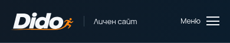
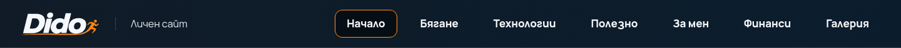
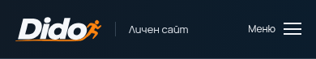
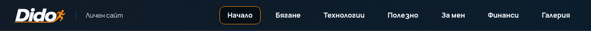

Вариант А — балансиран
Бегачът е увеличен с 38%, с плавно свързване към дългата линия.


Мобилен хедър — 320/390 px, височина 73 px.


Desktop хедър — 1440 px


Вариант Б — по-изразителен
Бегачът е около 75% по-висок, с по-плътни контури и по-силна линия.


Мобилен хедър — 320/390 px, височина 73 px.


Desktop хедър — 1440 px
